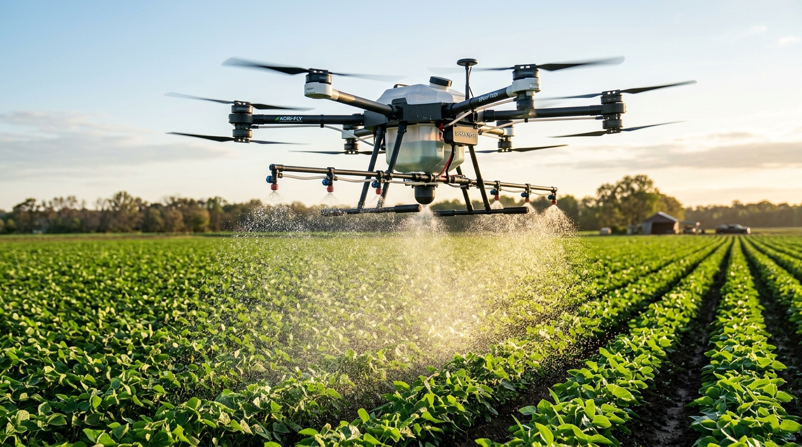

10× Faster Field Spraying
Treats 1 acre in 10–12 minutes. A single AGROFLY team covers 30–35 acres daily, beating manual labour bottlenecks.

Bringing precision drone technology to Indian farms.
Born in the fertile agricultural belt of Tamil Nadu, AGROFLY was created with a clear purpose: to eliminate the severe health hazards, extreme labor shortages, and wasteful runoff of manual knapsack spraying across Indian farmlands.
By uniting aerospace flight automation with certified agronomic expertise, we provide high-throughput aerial spraying services for smallholder family plots, commercial seed orchards, sugarcane cooperatives, and Farmer Producer Organizations (FPOs). Our turnkey drone sorties ensure that every single plant receives scientifically calibrated droplet coverage—without sending human workers into toxic chemical mist or compacting delicate soil root zones with heavy tractors.

Democratizing advanced aerial agricultural technology for every Indian grower, irrespective of landholding size or location.
We are dismantling the financial and logistical barriers of high-tech farming. Instead of burdening farmers with ₹8–10 Lakh equipment investments, AGROFLY delivers on-demand, pay-per-acre flight services backed by DGCA-certified commercial pilots. We guarantee 24-hour dispatch during critical pest outbreaks, 90% water conservation through ultra-low-volume misting, and total transparency with GPS flight logs.
Building India's most dependable, climate-resilient precision agricultural drone network covering 1,000,000 acres by 2030.
We envision a resilient agricultural landscape where drone swarms, multi-spectral NDVI satellite maps, and AI pest diagnostics work seamlessly together. By detecting fungal blast, armyworm, and nutrient stress up to 14 days before visible foliage damage occurs, AGROFLY empowers farmers to act proactively, drastically cut chemical usage, and protect groundwater quality for generations.
Engineered with aerospace-grade carbon fiber and smart telemetry, our drone fleet delivers scientific uniformity impossible with manual knapsacks.

Dual-frequency RTK GNSS coupled with ground base stations locks drone flight lines down to ±1.5 cm accuracy. This completely eliminates missed crop strips and prevents double-spray overdosing.
High-speed centrifugal atomizer discs break liquid into billions of uniform micro-droplets. These adhere electrostatically to the foliage, saving up to 90% water while preventing ground puddle runoff.
Specially shaped carbon composite propellers generate high-velocity downward air wash. This gently rolls the crop leaves upside down, coating the underside where destructive aphids, thrips, and borers shelter.
Real-time front, rear, and downward radar sensors measure canopy distance 100 times per second, maintaining an exact 1.8m to 2.2m standoff even over steep hill terraces and undulating slopes.
Designed from the soil up to maximize farmer net earnings, preserve health, and safeguard yield stability.
Treats 1 acre in 10–12 minutes. A single AGROFLY team covers 30–35 acres daily, beating manual labour bottlenecks.
Ultra-low volume spraying needs only 8–10 litres per acre compared to 150–200 litres for manual knapsacks, preserving village borewells.
Operates seamlessly over flooded paddy and muddy soil where heavy tractors sink and manual workers damage tillers.
All sorties are piloted by licensed RPC remote pilots trained in chemical safety, civil aviation rules, and weather assessment.
If sudden rain washes off your chemical application within 4 hours of flight, we provide a 100% free re-spray sortie.
Receive a digital sortie certificate with geo-tagged boundaries, pilot credentials, and dosage telemetry for PMFBY insurance audits.
From an initial 2-drone pilot in Thanjavur to India's most dependable agricultural drone spraying service network.
Founded by agronomy researchers and aerospace engineers. Completed our first 20-acre paddy trial in Tamil Nadu, proving 90% water reduction and zero crop trampling.
Awarded official Directorate General of Civil Aviation (DGCA) compliance. Established our remote pilot training wing, qualifying over 50 rural youth as certified agricultural drone captains.
Partnered with 24 Farmer Producer Organizations (FPOs) and sugar mills across 4 southern agri-states, deploying high-volume drone swarms for emergency pest outbreaks.
Operating 42+ DGCA hexacopters equipped with AI obstacle avoidance, real-time farm dashboard telemetry, and 1-click booking for over 1,200 commercial growers.
Strict operational protocols, DGCA pilot licensing, and comprehensive aerial liability insurance protecting every grower.
Every flight mission is authorized by DGCA-certified Remote Pilot Certificate (RPC) holders, adhering strictly to Drone Rules 2021 aerial safety frameworks.
The people behind the drones.